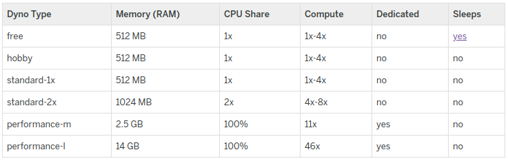
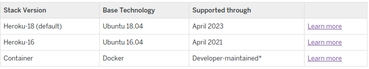
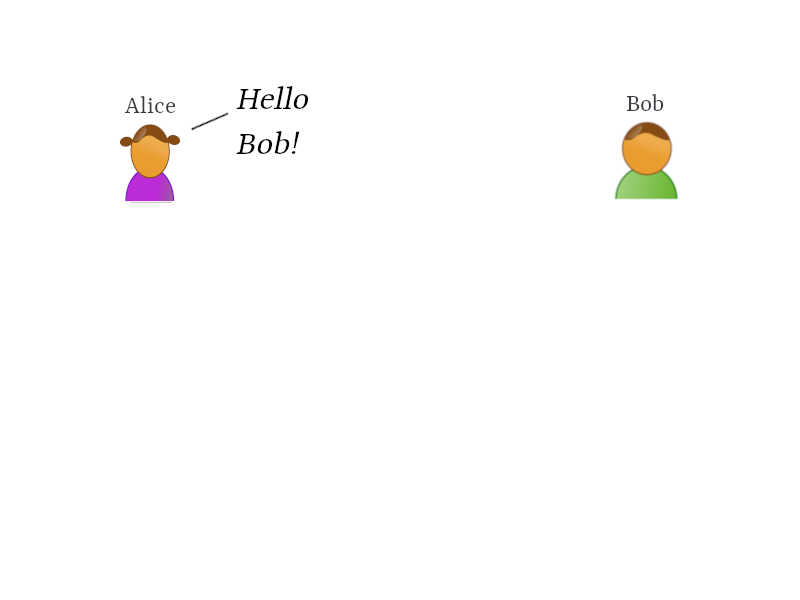
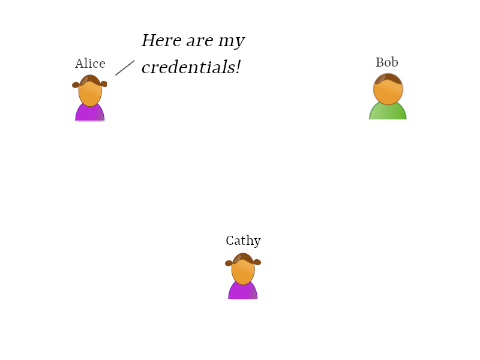
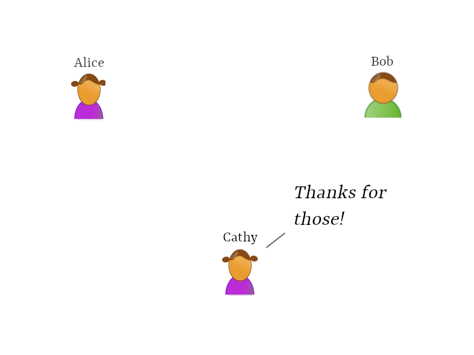
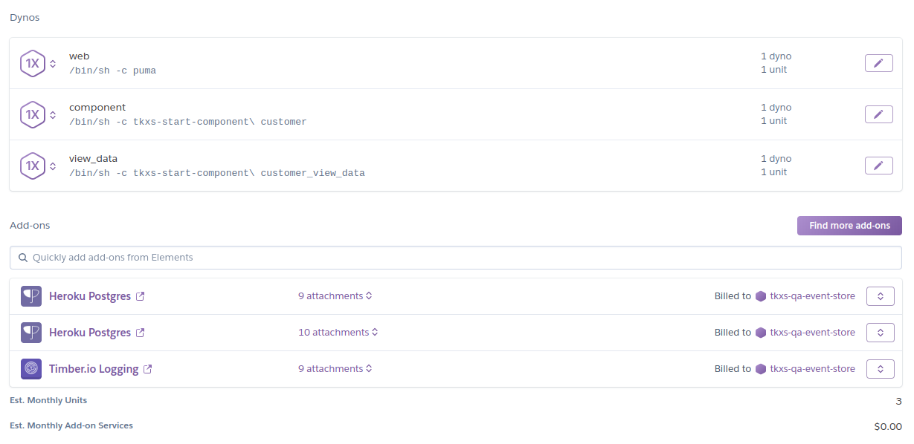
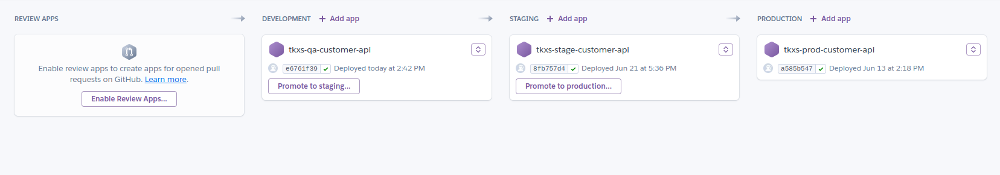

name: inverse layout: true class: center, middle, inverse --- template: inverse # Heroku Overview ## and handling secrets [ @tkxs ] --- layout: false ## Heroku Overview .left-column[ ### What? ] .right-column[ Heroku Components: * Dynos - Properties - Behavior - Stacks and Buildpacks ] -- .right-column[ * Heroku and Third Party Add-ons ] -- .right-column[ * Config Variables and Secret Sharing ] -- .right-column[ * Apps and Pipelines ] -- .right-column[ * The Heroku router ] -- .right-column[ * The Heroku CLI ] --- ## Heroku Overview .left-column[ ### What? ### Dynos ] .right-column[ ] --- ## Heroku Overview .left-column[ ### What? ### Dynos ] .right-column[ - A dyno is a linux container ] -- .right-column[ - Not _those_ linux containers ] -- .right-column[ - In this sense, heroku is partially a container orchestration platform ] --- ## Heroku Overview .left-column[ ### What? ### Dynos ] .right-column[ Dyno Properties: - Type - Memory (RAM) - CPU Share - Compute - Dedicated - Cost (units) ] -- .right-column[  ] --- ## Heroku Overview .left-column[ ### What? ### Dynos ] .right-column[ Dyno Behavior: - Dynos are managed by the [dyno manager](https://devcenter.heroku.com/articles/dynos#the-dyno-manager) ] -- .right-column[ - Web dynos bind to a port and recieve traffic from the Heroku router ] -- .right-column[ - Worker dynos do neither ] -- .right-column[ - All dynos reboot every 24 hours with a 20 minute variance ] -- .right-column[ - Otherwise, all runtime behavior is determined by a dynos stack, process type, buildpack, and command ] --- ## Heroku Overview .left-column[ ### What? ### Dynos ] .right-column[ Dyno Stacks: - Heroku-18 (current default) - Heroku-16 - Container ] -- .right-column[  ] -- .right-column[ - Functionally equivalent ``` FROM ubuntu:18.04 ``` ] -- .right-column[ [Surprise!](https://github.com/heroku/stack-images/blob/master/heroku-18/Dockerfile) ] --- ## Heroku Overview .left-column[ ### What? ### Dynos ] .right-column[ Dyno Buildpacks: - You can use one or multiple buildpacks, or even none (container stack) - Buildpacks determine the build process for an app, and which assets and runtimes should be made available at runtime - Buildpacks are composed of a set of scripts; behavior of the scripts is a function of the language being leveraged ] -- .right-column[ - [Official Heroku](assets/images/buildpacks.png) - Third Party - Make your own! ] -- .right-column[ - [Heroku Ruby Buildpack](https://github.com/heroku/heroku-buildpack-ruby) ] --- ## Heroku Overview .left-column[ ### What? ### Dynos ] .right-column[ Dyno Process Types: - Web - Worker - Release ] -- .right-column[ Dyno Commands: - Defined in the [Procfile](https://github.com/technekes/dupont/blob/master/Procfile) ] -- .right-column[ - _or_ defined in the [heroku.yml](https://github.com/technekes/marketing-letter-adjustment-api/blob/master/heroku.yml) when using the container stack ] --- ## Heroku Overview .left-column[ ### What? ### Dynos ### Add-ons ] .right-column[ Add-on Types: - Heroku (Data) Add-ons - Third-Party Add-ons ] -- .right-column[ - The only substantial distinction between Heroku and Third Party Add-ons are that they are billed differently ] --- ## Heroku Overview .left-column[ ### What? ### Dynos ### Add-ons ] .right-column[ Add-on Properties: - Plans and Pricing - Shareability - Single Installation - Supported Languages ] --- ## Heroku Overview .left-column[ ### What? ### Dynos ### Add-ons ### Secrets ] .right-column[ Config Vars: - Environment variables ] -- .right-column[ - Setting or removing triggers an app reboot and release phase ] -- .right-column[ - Persist between restarts and deployments ] -- .right-column[ - Multiple can be set at once via the CLI to reduce reboots and releases ] --- ## Heroku Overview .left-column[ ### What? ### Dynos ### Add-ons ### Secrets ] .right-column[ - Some environment variables are platform specific and leverage by the heroku backend ] -- .right-column[ - `ERROR_PAGE_URL` - `MAINTENANCE_PAGE_URL` ] --- ## Heroku Overview .left-column[ ### What? ### Dynos ### Add-ons ### Secrets ] .right-column[ - If it's in slack it isn't secret ] -- .right-column[ - Slack is unencrypted ] -- .right-column[ - TLS ] --- ## Heroku Overview .left-column[ ### What? ### Dynos ### Add-ons ### Secrets ] .right-column[  ] --- ## Heroku Overview .left-column[ ### What? ### Dynos ### Add-ons ### Secrets ] .right-column[  ] --- ## Heroku Overview .left-column[ ### What? ### Dynos ### Add-ons ### Secrets ] .right-column[  ] --- ## Heroku Overview .left-column[ ### What? ### Dynos ### Add-ons ### Secrets ] .right-column[ <img src="assets/images/lastpass.png" width="650" height="215"> ] --- ## Heroku Overview .left-column[ ### What? ### Dynos ### Add-ons ### Secrets ### Apps ] .right-column[ Heroku applications combine the set of dynos, add-ons and secrets defined for your application ] -- .right-column[  ] --- ## Heroku Overview .left-column[ ### What? ### Dynos ### Add-ons ### Secrets ### Apps ] .right-column[ - Heroku pipelines group applications with a shared source repository ] -- .right-column[ - _usually_ ] -- .right-column[  ] --- ## Heroku Overview .left-column[ ### What? ### Dynos ### Add-ons ### Secrets ### Apps ### Router ] .right-column[ The Heroku Router: ] -- .right-column[ - Actually a set of load balanced routers ] -- .right-column[ - SSL terminates at the load balancer ] -- .right-column[ - The load balancer balances requests between a set of routers ] -- .right-column[ - The routers are responsible for forwarding HTTP requests to an applications web dyno ] --- ## Heroku Overview .left-column[ ### What? ### Dynos ### Add-ons ### Secrets ### Apps ### Router ] .right-column[ ``` 2012-10-11T03:47:20+00:00 heroku[router]: at=info method=GET path=/ host=myapp.herokuapp.com request_id=8601b555-6a83-4c12-8269-97c8e32cdb22 fwd="204.204.204.204" dyno=web.1 connect=1ms service=18ms status=200 bytes=13 tls_version=tls1.1 protocol=http ``` ] -- .right-column[ ``` 2012-10-11T03:47:20+00:00 heroku[router]: at=error code=H12 desc="Request timeout" method=GET path=/ host=myapp.herokuapp.com request_id=8601b555-6a83-4c12-8269-97c8e32cdb22 fwd="204.204.204.204" dyno=web.1 connect= service=30000ms status=503 bytes=0 protocol=http ``` ] -- .right-column[ - Heroku has 37 [error codes](https://devcenter.heroku.com/articles/error-codes) unique to the platform, 13 or so dedicated to routing errors. ] --- ## Heroku Overview .left-column[ ### What? ### Dynos ### Add-ons ### Secrets ### Apps ### Router ] .right-column[ - `method`: HTTP request method - `path`: HTTP request path and query string - `host`: HTTP request Host header value - `request_id`: the Heroku HTTP Request ID - `fwd`: HTTP request X-Forwarded-For header value - `dyno`: name of the dyno that serviced the request - `connect`: amount of time in milliseconds spent establishing a connection to the backend web process - `service`: amount of time in milliseconds spent proxying data between the backend web process and the client - `status`: HTTP response code - `bytes`: Number of bytes transferred from the backend web process to the client - `protocol`: indicates the request protocol - `tls_version`: The TLS version used to make the connection. Possible values are ssl3.0, tls1.0, tls1.1, tls1.2, or unknown. Note: this is for Private Spaces only. ] --- ## Heroku Overview .left-column[ ### What? ### Dynos ### Add-ons ### Secrets ### Apps ### Router ] .right-column[ The Notorious Timeout: ] -- .right-column[ - After a connection is passed to a web dyno, HTTP requests have 30 seconds to respond before an [H12](https://devcenter.heroku.com/articles/error-codes#h12-request-timeout) timeout is issued ] -- .right-column[ - There is support for long-polling or streaming responses ] -- .right-column[ Long-Polling or Streaming Responses: - After each response byte is sent, a rolling 55 second window is reset. If the window elaspses with no data sent, an [H15](https://devcenter.heroku.com/articles/error-codes#h15-idle-connection) or [H28](https://devcenter.heroku.com/articles/error-codes#h28-client-connection-idle) error is logged and the connection is closed. ] --- ## Heroku Overview .left-column[ ### What? ### Dynos ### Add-ons ### Secrets ### Apps ### Router ### CLI ] .right-column[ The Heroku CLI: - The [Heroku CLI](https://devcenter.heroku.com/articles/heroku-cli) allows for interacting with the Heroku API via the CLI ] -- .right-column[ - Heroku Dashboard++ ] -- .right-column[ - Officially supported [plugins](https://devcenter.heroku.com/articles/heroku-cli#useful-cli-plugins) ] --- ## Heroku Overview .left-column[ ### What? ### Dynos ### Add-ons ### Secrets ### Apps ### Router ### CLI ] .right-column[ The Heroku CLI: - This is the demo part where I wing it - `heroku help` ] --- template: inverse # That's it --- template: inverse # Thanks